Here I discuss some of the extraterrestrials that MAJestic has been involved with… that I am privy to discuss. I have only first hand knowledge of four species. That is it. That is all that I can speak intelligently about.
That is the extent of what I can discuss, and of that, my knowledge is limited, and what I can say is restricted even further. Never the less, you all might find what I have to say of interest.
Cephalopods (not an extraterrestrial)
We start with the first species to be considered to have “intelligence” worthy of (human) consideration upon the earth. This is a great read, if I must say so myself. It serves to introduce you all to what humans can expect during the sentience sorting procedure.
It is not an extraterrestrial species. Instead it is a species that evolved on the earth, obtained intelligence, and then moved on to niche roles within our environment(s).
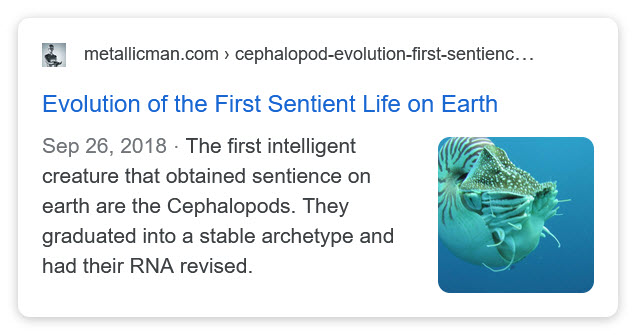
Take note that the species RNA was altered when it went through the sentience sorting procedure. It then birthed an entirely different species of creature.
Perhaps that is what I am? Eh? Maybe you should review this post in light of this message…
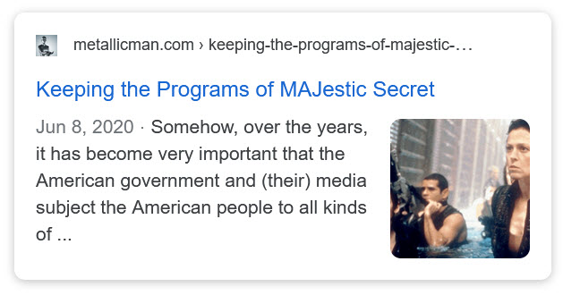
Perhaps I am to pass on my altered RNA through my progeny…
… which a new species of human. One that can world-line travel at will, that has one foot in Heaven, and one firmly grounded on the earth, and that is able to understand and communicate with other non-human species. Perhaps the entire purpose of all this…
Susquehannocks (Mystery people)
Well, there’s been all sorts of extraterrestrial colonies on the earth. Most have completely disappeared. I think that it’s a good worthwhile exercise to study a few of them. Or, in this case, were some of the “tribes of American Indians” actually an extraterrestrial colony?
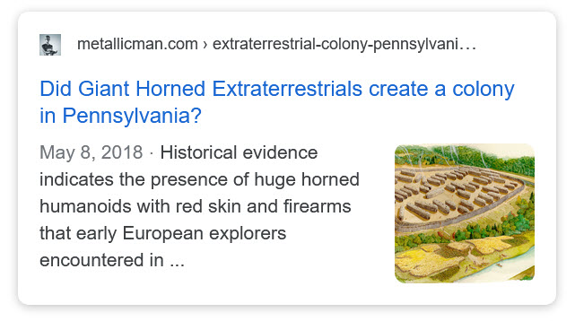
Type – 1 Greys
Click on this button to go to the entire sub-index…
Type-2 Extraterrestrials
I am sorry that I cannot talk too much about this species. It is a forbidden and taboo subject. Please do not ask.
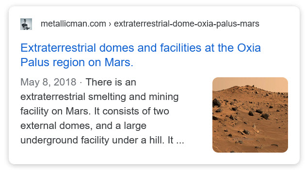
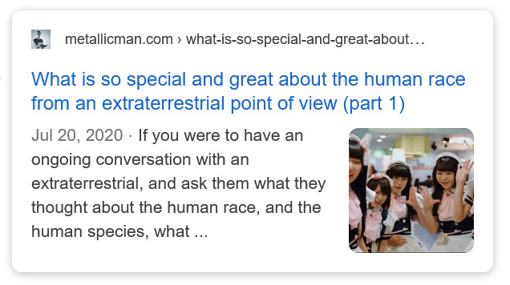
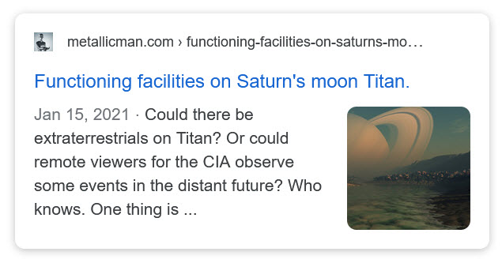
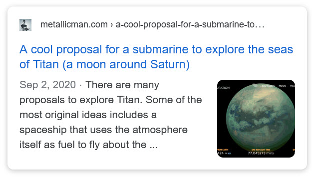
Type-3 Mantids
I am also limited to what I can say about this species. It’s not so much that I am forbidden from doing so, but rather that the language that I can use is so very limited for the general population.
This species is a trans-dimensional species. They move about within the world-lines just as easily as they move about in the Heavens. To them, it is all one and the same.
To best understand this, and what I have to say about them, you need to read about “Other Universes / Heavens” section within this Index.
Before they took on their role, they evolved naturally on this earth in the physical. That is correct. They are native to the earth, and evolved on earth, built up a society, made things, created cities, and moved on to their current roles. As such, they have left behind some relics…
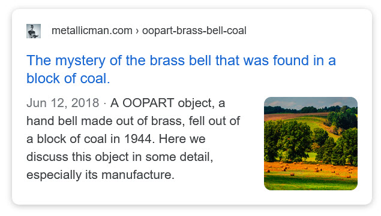
I have much to say about them, and I will get to that once, I establish commonality of dialog about the non-physical realities.
How it all fits together
- World-Line travel basics
- A discussion of souls and fractionals
- MM discusses Mantids
- MMs affirmation prayer report
- Manifestation of affirmations
- Jumping templates
- Mortality and our purposes in life
- IS-BE mantids and you
- Quanta and your mantid
- About mantids and mantid primes
- 3-4 affirmation campaign update
- Why separations between humans and mantids are necessary
- The human mantid trinity
- Extraction upon translation
- The choices at death
- The forms we take on during our escape from the Prison Planet
- Do not fear the realignment event
- The components that comprise quantum elements
- How template terminology can be used within prayer affirmation campaigns
- Ghost People on the MWI
- The non-physical body and it’s quantum construction
- Physical bodes and their attachment with world-line templates
- Fate Forecasting using a weather analogy
- Apple Souls
- Hive and Matrix Soul construction (plus a message from the commander)
- The mysteries of Heaven and entrapment (Part 1)
- The mysteries of Heaven and entrapment (Part 2)
Mystery Species
I know very little about these various species. Little is an understatement. It’s actually quite pathetic, and so I have posted what I have to say about them here.
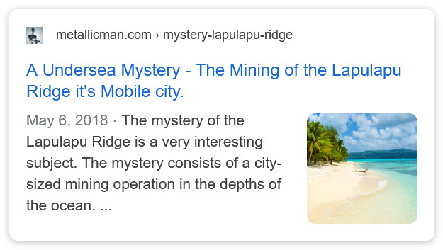
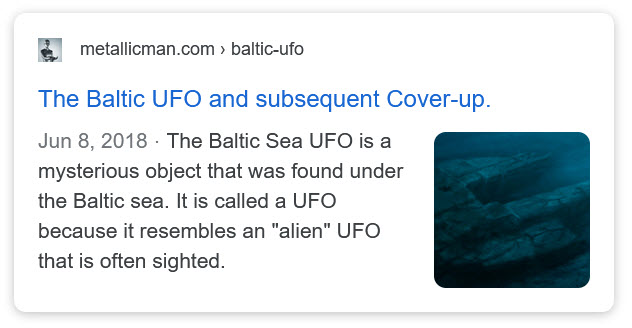
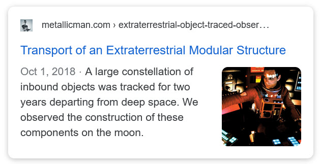
Progenitors
No one knows that much about the Progenitors. That includes our benefactors. They know some things, and I know that, but they have never told me much of anything at all. Never the less, I place what I know here.
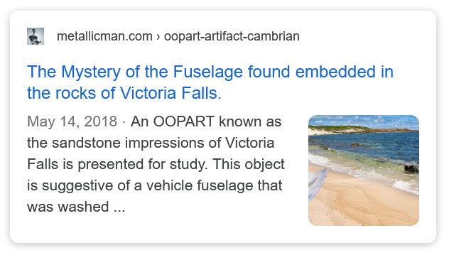
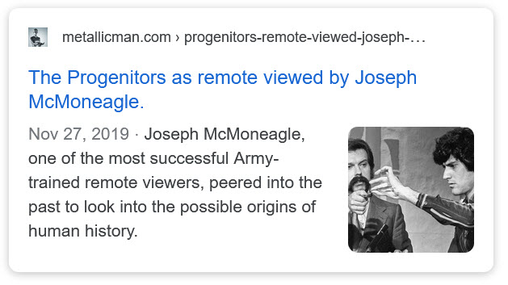
Misc
The Ganymede Hypothesis
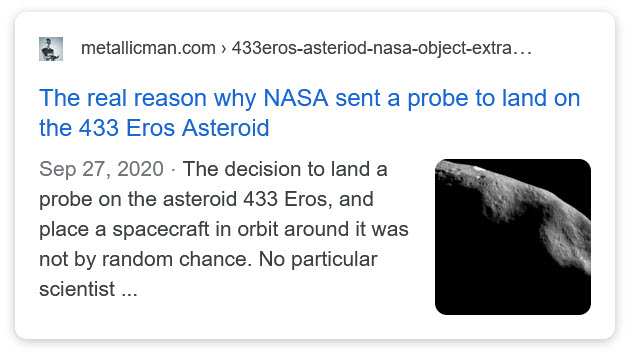
The “Star Children” and other nonsense…
There is a lot of disinformation on the internet. But if you take the time to look at the issues critically, you can see just how nonsensical they actually are.
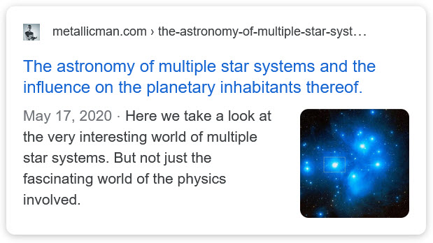
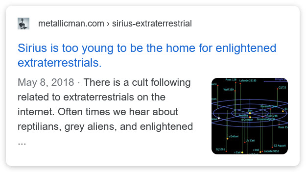
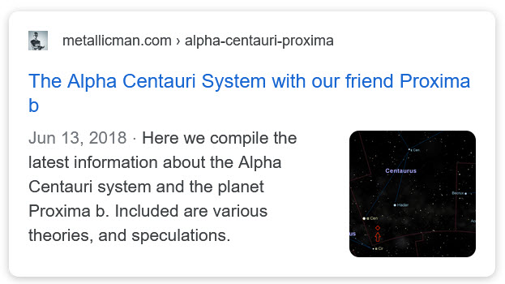